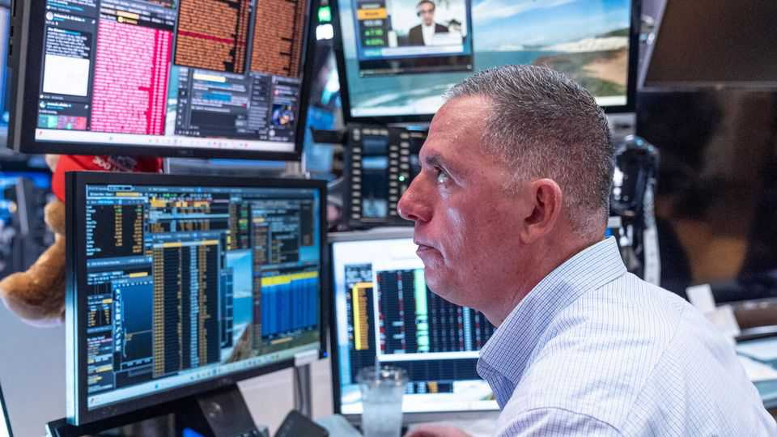
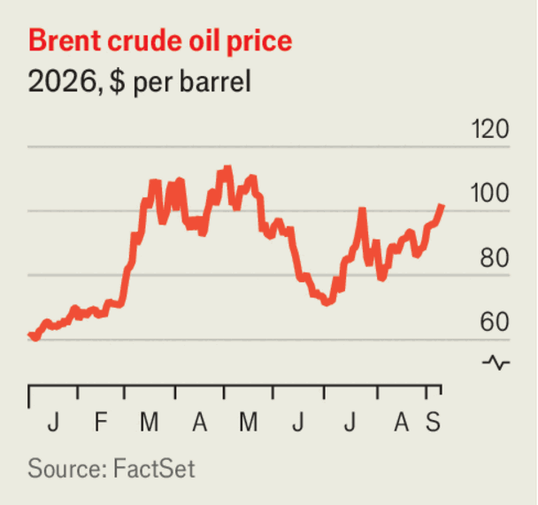

Business

Sep 10th 2026

Oil prices spiked again amid renewed fighting in the Middle East; Brent crude rose above $100 a barrel for the first time since July. Traders worry that oil stocks are lower than at the start of the conflict in February. In America the national average price for a gallon of unleaded petrol rose to $4.14 over the Labour Day weekend, the highest it has ever been for the holiday. Rising fuel costs are becoming a headache for the Republicans ahead of the midterms.
The European Central Bank raised interest rates for the second time this year, lifting its deposit facility from 2.25% to 2.5%. The bank said the conflict with Iran continued to generate inflation pressures, and that inflation would remain well above its target for an extended period. “The outlook is highly uncertain”, it cautioned.
The yen traded around ¥153 to the dollar, a seven-month high. Scott Bessent, America’s treasury secretary, who helped Japan prop up the currency in July, warned traders against betting on a reversal: “I am the house now…Bet against me if you want.”
Chinese exports registered another bumper month in August, up by 25%, year on year. High-tech goods drove much of the growth; exports to America rose by 34%. China is on track to record another annual trade surplus of more than $1trn. South Korea is also benefiting from the AI boom. Its chip exports grew by 209% in August. The value of Korean goods sent abroad is already higher than for all of last year and expected to surpass $1trn by early December.
Canada slapped retaliatory tariffs worth C$27bn ($20bn) on American goods after trade talks collapsed. America followed up by banning imports of Canadian dairy, alcoholic drinks and other products. Donald Trump also called for a boycott of Bombardier. The Canadian aerospace company responded by pointing out that it has created tens of thousands of jobs across the United States and its supply chain includes approximately 2,800 American companies.
American employers created 162,000 jobs in August, more than the previous three months combined. The rebound has raised expectations that the Federal Reserve will increase interest rates after it meets on September 15th-16th.
OpenAI released its latest model to much acclaim. The firm claimed that GPT-6 Astra “represents a generational leap in capability” and would lead in fields such as science and software engineering, vaulting it ahead of Anthropic. Meanwhile, a researcher at Anthropic quit his job, warning that the AI industry was ignoring safety in its race to build superintelligent AI, which “could kill us all by the end of the decade”. His post has 140m views , so far.
Apple held its first product launch under John Ternus as chief executive. The company unveiled its first foldable iPhone, the Duo, with a hefty price tag starting from $1,999. It also took the wraps off its next-generation iPhones, the 18 Pro and 18 Max. The basic iPhone 18 model will, unusually, arrive later (next year). Apple is betting that consumers will pay up for its devices. The foldable phone could be a game-changer, although Samsung and other manufacturers have long sold foldable devices.
Volkswagen announced “Future Plan 2030”, a strategy that includes slashing 50,000 jobs in addition to 50,000 earlier cuts. Germany’s biggest carmaker said that aligning its workforce with “economic reality is essential”. Costly domestic workers have become a problem for VW as Chinese competition grows. Britain is contending with the same issue. Jaguar Land Rover unveiled 4,000 job losses over two years as part of its “Growth Reimagined” strategy. JLR’s decision is a blow to the ten-year plan pushed by Andy Burnham, the new prime minister, to reindustrialise British regions.
Meanwhile, VW struck a deal to switch production at its Osnabrück factory from cars to making parts for Israel’s Iron Dome air-defence system, securing employment at the plant. Although car manufacturing is on the wane in Germany, the government is ramping up defence spending, causing a rush of international defence and aerospace companies to set up operations there.
China announced $54bn in capital injections for state-owned banks and insurers, in an effort to strengthen their balance-sheets and support economic growth. Most went to the Industrial and Commercial Bank of China and the Agricultural Bank of China, two of the country’s biggest lenders. But the injection is small beside China’s $74trn banking system, which is struggling with weak loan demand, a property slump and vast local-government debts.
A software glitch in Britain’s air-traffic control system caused chaos at the country’s airports, leading to hundreds of flight cancellations. Airlines criticised NATS, the public-private partnership that provides the system, pointing out that the problem was similar to another failure that occurred three years ago, and hadn’t yet been fixed.
French wine production is expected to fall by 6% this year, leaving the country with one of its smallest harvests in three decades, according to the agriculture ministry. Champagne output could plunge by 48%. Unusually hot and dry weather has battered vineyards. But France also has too much wine for a shrinking market: consumers are quaffing less, prompting growers to rip up their vines.